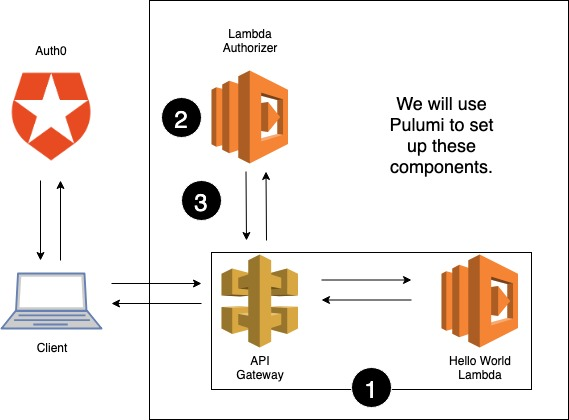

Protecting Your APIs with Lambda Authorizers and Pulumi

Creating serverless applications just got even easier! You can now protect your application APIs in just three easy steps. We’ve already posted about how easy it is to create serverless apps in Pulumi. Now, we’re helping you simplify protecting those apps with API Gateway and Lambda authorizers.
With Pulumi’s new AWSX package, you can quickly define a Lambda and an AWS Lambda authorizer to protect it. We’re once again harnessing the power of Lambdas as Lambdas to allow developers to focus on writing code.
Today, we will walkthrough creating a simple serverless app using AWS and Pulumi. We will simplify implementing the OAuth protocol by using Auth0 and AWS Lambda authorizers to authorize users. Auth0 provides a universal authentication and authorization platform for applications. It has become an extremely popular platform for user management because Auth0 makes OAuth easy.
Concepts
Before we get started, let’s go over some concepts we’ll be using.
API Gateway
An API Gateway takes clients requests and then re-routes them to the appropriate backend service. Typically, a gateway serves as the “front door” for an API and is used for traffic management as well as flexible security controls.
Using AWS API Gateway, you can build a fully managed collection of resources which integrate with AWS Lambda and various other AWS resources. To control who can call your API, you can use IAM permissions, an Amazon Cognito User Pool or set up custom logic using a Lambda authorizer.
OAuth
OAuth is an industry-standard for token-based authorization. Using OAuth, users can grant third-party applications or websites access to their information on another website without disclosing their password. Google and Facebook are two very common examples of sites that permit users to share their personal information with websites or applications using OAuth.
Lambda Authorizers
An AWS Lambda authorizer is a Lambda that provides access control to an API. It contains custom logic for authorizing requests to an endpoint. If a Lambda authorizer is configured, API Gateway routes a client’s call to the Lambda first. The Lambda authorizer runs its custom logic and returns a Policy and principal ID, which are used by API Gateway to determine if the call to the backend is allowed.
Step-by-Step Guide To Creating a Lambda Authorizer
Using a Lambda authorizer, we can implement the authorization flow using Auth0 to handle our Access Tokens.
API Gateway can be used to protect many different resources, and in the following example we will front an AWS Lambda. Users authenticate with Auth0 and then use the token they’ve obtained to make a request to our Lambda via our API Gateway, which authorizes the request by validating the token with Auth0. Some of the code examples have been stubbed or shortened for this blog post. The full code example can be found in our Pulumi examples repo.
Below is a diagram of the architecture we will set up. In Step 1, we will create our API Gateway and Hello World Lambda. In Step 2, we will set up the logic for our Lambda authorizer. And finally in Step 3, we will bring it all together by telling API Gateway to use our authorizer.

1 - Define Your Routes
Using Pulumi’s AWSX package,
you can easily define routes to serverless apps as well as routes to
static resources. We will create a very simple Hello world! backend
Lambda, but in practice you can have this do much more interesting
things.
import * as awsx from "@pulumi/awsx";
// Create our API and reference the Lambda authorizer
const api = new awsx.apigateway.API("myapi", {
routes: [{
path: "/hello",
method: "GET",
eventHandler: async () => {
return {
statusCode: 200,
body: "<h1>Hello world!</h1>",
};
},
}],
});2 - Write Your Custom Auth Logic
Just as Pulumi allows you to define your Lambda inline, you can define
your custom authorization code. We will define a small wrapper for our
custom logic and write the rest of the code as a function called
authenticate. Pulumi will package up all our runtime code and create
an AWS Lambda for us.
import * as awsx from "@pulumi/awsx";
import * as pulumi from '@pulumi/pulumi';
import * as jwksClient from 'jwks-rsa';
import * as jwt from 'jsonwebtoken';
import * as util from 'util';
const config = new pulumi.Config();
const jwksUri = config.require("jwksUri");
const audience = config.require("audience");
const issuer = config.require("issuer");
const authorizerLambda = async (event: awsx.apigateway.AuthorizerEvent) => {
try {
return await authenticate(event);
}
catch (err) {
console.log(err);
// Tells API Gateway to return a 401 Unauthorized response
throw new Error("Unauthorized");
}
}
/**
* Below is all code that gets added to the Authorizer Lambda. The code was copied and
* converted to TypeScript from
* [Auth0's GitHub Example](https://github.com/auth0-samples/jwt-rsa-aws-custom-authorizer)
*/
function getToken(event: awsx.apigateway.AuthorizerEvent): string {
// Stubbed function to extract and return the Bearer Token from the Lambda event parameter
}
// Check if the Token is valid with Auth0
async function authenticate(event: awsx.apigateway.AuthorizerEvent): Promise<awsx.apigateway.AuthorizerResponse> {
const token = getToken(event);
const decoded = jwt.decode(token, { complete: true });
if (!decoded || typeof decoded === "string" || !decoded.header || !decoded.header.kid) {
throw new Error('invalid token');
}
const client = jwksClient({
cache: true,
rateLimit: true,
jwksRequestsPerMinute: 10, // Default value
jwksUri: jwksUri
});
const key = await util.promisify(client.getSigningKey)(decoded.header.kid);
const signingKey = key.publicKey || key.rsaPublicKey;
if (!signingKey) {
throw new Error('could not get signing key');
}
const verifiedJWT = await jwt.verify(token, signingKey, { audience, issuer });
if (!verifiedJWT || typeof verifiedJWT === "string" || !isVerifiedJWT(verifiedJWT)) {
throw new Error('could not verify JWT');
}
return awsx.apigateway.authorizerResponse(verifiedJWT.sub, 'Allow', event.methodArn);
}3 - All Together Now
Now let’s tie it all together! We will modify the route we created in Step 1 to include our authorizer.
import * as awsx from "@pulumi/awsx";
// Create our API and reference the Lambda authorizer
const api = new awsx.apigateway.API("myapi", {
routes: [{
path: "/hello",
...
authorizers: awsx.apigateway.getTokenLambdaAuthorizer({
authorizerName: "jwt-rsa-custom-authorizer",
header: "Authorization",
handler: authorizerLambda,
identityValidationExpression: "^Bearer [-0-9a-zA-Z._]*$",
authorizerResultTtlInSeconds: 3600,
}),
}],
});The Finished Product
When we run pulumi up, Pulumi will create our resources and provide us
with our protected endpoint.
$ pulumi up
...
Type Name Status Info
+ pulumi:pulumi:Stack lambda-authorizer-dev created 1 message
+ ├─ aws:apigateway:x:API myapi created
+ │ ├─ aws:iam:Role myapifc45ff03 created
+ │ ├─ aws:iam:RolePolicyAttachment myapifc45ff03-32be53a2 created
+ │ ├─ aws:lambda:Function myapifc45ff03 created
+ │ ├─ aws:apigateway:RestApi myapi created
+ │ ├─ aws:apigateway:Deployment myapi created
+ │ ├─ aws:lambda:Permission myapi-62a1b306 created
+ │ └─ aws:apigateway:Stage myapi created
+ ├─ aws:iam:Role jwt-rsa-custom-authorizer-authorizer-role created
+ ├─ aws:iam:Role jwt-rsa-custom-authorizer created
+ ├─ aws:iam:RolePolicyAttachment jwt-rsa-custom-authorizer-32be53a2 created
+ ├─ aws:lambda:Function jwt-rsa-custom-authorizer created
+ └─ aws:iam:RolePolicy jwt-rsa-custom-authorizer-invocation-policy created
Outputs:
url: "https://XXXXX.execute-api.us-west-2.amazonaws.com/stage/"
Resources:
+ 14 created
Duration: 28s
You’ll notice there’s a ton of resources we didn’t explicitly define. AWSX provisions the appropriate Lambdas, roles, and more for you. If required, all of these resources can be overridden in your Pulumi program by explicitly defining them.
Let’s give try out our new API.
We can now curl our endpoint without a token and should get a 401 Unauthorized response.
$ curl $(pulumi stack output url)hello
{"message":"Unauthorized"}
We can curl our endpoint with an invalid token and should once again get a 401 Unauthorized response.
$ curl $(pulumi stack output url)hello -H "Authorization: Bearer invalid"
{"message":"Unauthorized"}
Finally, we expect a 200 response when we obtain a token from Auth0 and use it to call our API. We can get a token by visiting the API Details page for our API and clicking the Test tab. This provides us with a valid token for testing purposes only. The way tokens are acquired by users or client apps will depend on the type of application (i.e. native mobile app, single-page app, web app, etc.) being developed. For more information on authenticating users, visit Auth0’s documentation.
Using the test access token, the API will return a 200 response: Hello world!
$ curl $(pulumi stack output url)hello -H "Authorization: Bearer <VALID_TOKEN>"
<h1>Hello world!</h1>
For the complete code example, visit our examples repo.
Keep It Going
While we used OAuth and Auth0 in this blog post, AWS Lambda authorizers are an extremely flexible tool that allow you to implement whatever custom authorization logic you require. AWS also supports Cognito Authorizers, which use AWS Cognito User Pools, and we will share even more examples soon.
There are a vast amount of resources for deploying your code into the cloud, and we want to make it easier for developers to make the most of those resources. Pulumi’s AWSX package provides reusable abstractions to enable developers to get their code production ready faster.
Get going with these resources:
To learn more about using Pulumi and Lambda authorizers here.
Posted on